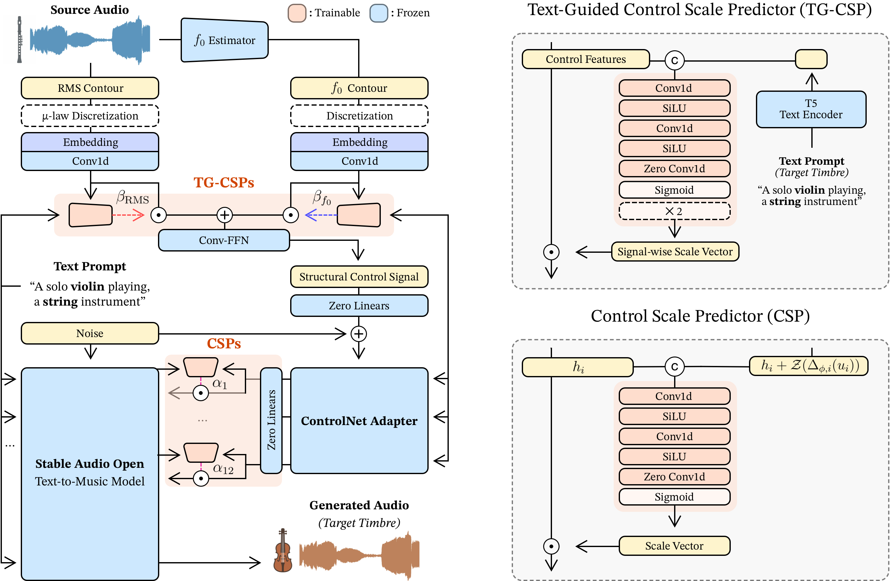
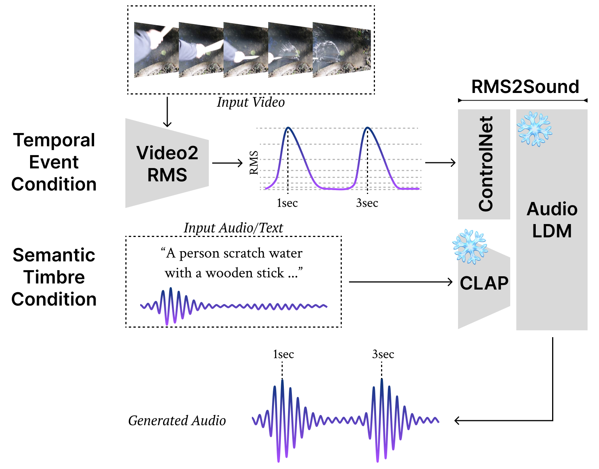
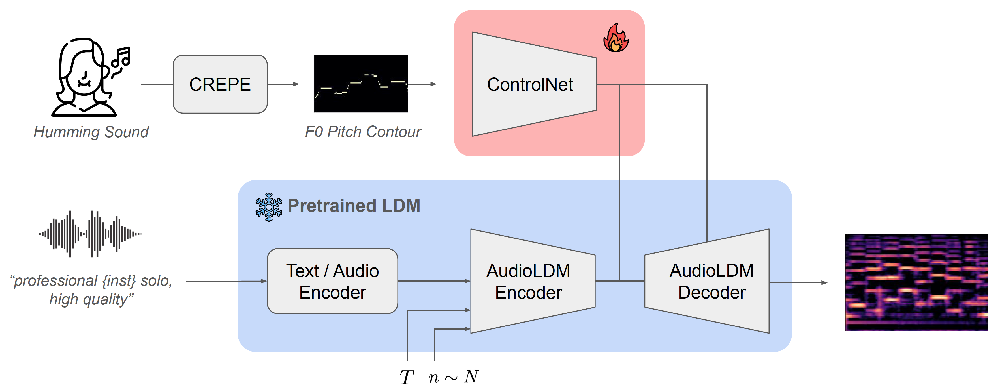

Publications
A selected archive of research papers and technical reports from my ongoing research.
Publication archive
Showing all publications.
-

AdaTT: Text-Guided Instrument Timbre Transfer with Target-Adaptive Structural Control
27th Annual Conference of the International Speech Communication Association (INTERSPEECH), 2026.
-

DDSP-Based Neural Vehicle Sound Synthesis from Driving Signals
6th AES International Conference on Automotive Audio, 2026.
-

Video-Foley: Two-Stage Video-To-Sound Generation via Temporal Event Condition for Foley Sound
IEEE/ACM Transactions on Audio, Speech, and Language Processing (TASLP), 2025.
-

Pitch-ControlNet: Continuous Pitch Control for Monophonic Instrument Sound Generation
Late-Breaking/Demo (LBD), 25th International Society for Music Information Retrieval Conference (ISMIR), 2024.